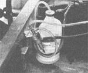
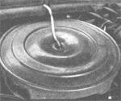

The Alcohol-Gasohol Fuel Solution
Even before Lance Crombie's solar still (see "The Plowboy Interview") opened up new possibilities in the field of alcohol distillation, Bill Krass gave Mother Earth News' researchers this demonstration of...
By the Mother Earth News editors
January/February 1979
You might (if you haven't read this issue's "Plowboy Interview" yet) be surprised to hear that there are over 8-1/2 billion gallons of potential automotive fuel in the United States today that aren't even being used, or to hear that this fuel is [1] relatively non-polluting, [2] totally renewable (unlike petroleum resources), [3] fairly economical to manufacture - even on a small scale - and [4] presently being allowed to rot away or, at best, being used in a shamefully inefficient manner.
Sounds crazy, right? Wrong, for as the Mother Earth News research staff recently discovered, there is a fuel that's not only abundant (in its undistilled form) throughout the U.S. and many other arable parts of the world, but also lives up to every one of these claims, and that fuel is alcohol.
You see, it just so happens that the stuff most people think of as the "main ingredient" of an intoxicating beverage is the selfsame substance that could just about eliminate our current fuel shortage, either as an additive to present gasoline supplies or as a possible replacement for gasoline altogether!
What it boils down to is this: The internal-combustion engine as we know it today (and that includes automobile, truck, tractor and bus powerplants) doesn't have to run on gasoline. In fact, prior to the second World War (when gasoline prices were more nearly comparable to those of other fuels), some automotive and agricultural equipment manufacturers even offered the consumer a choice of carburetors, which allowed the buyer to use fuels other than gas if he or she so desired. In other words, it wasn't at all uncommon for a farmer to power his John Deere with ethanol (grain alcohol) distilled from his own spoiled crops.
Unfortunately for us little folks, the technology and necessities of the war made it possible for gasoline to be produced in greater volume (and at a lower cost) than other forms of fuel, hence the American public was cleverly "weaned" on gasoline and soon forgot that other fuel alternatives even existed!
Forgot, that is, until the harsh reality of the gasoline shortage of 1974 drove home the fact that we were (and still are) pitifully dependent on foreign petroleum sources, and at that point alcohol fuel again entered the scheme of things.
The fact is that (especially since that 1974 crisis) some folks have actually been doing something about the fuel problem other than just talking about it. Folks like Albert Turner, who, together with his colleagues at the Southeast Farmer's Cooperative in Selma, Alabama, have succeeded in producing up to 90 gallons of grain alcohol per day from crop wastes, fuel which they mix with low-octane gasoline to make "gasohol" to power their pickups and tractors. On the other hand, people like aeronautical engineer Richard Blaser went beyond the gasohol concept and modified existing engines to run directly on straight alcohol, with striking results.
As it turned out, several of our researchers got a firsthand look at the results of these alcohol-as-fuel experiments, and were very impressed by what they saw. It all started when Richard Merritt, a federal lobbyist for the state of Nebraska and a member of the Nebraska Gasohol Committee, offered to set up a demonstration for Mother Earth News' somewhat skeptical crew.
Representing the gasohol folks was Bill Krass, a federally employed carpenter who - although he described himself as an "unofficial lobbyist" - showed just as much enthusiasm for the alcohol fuel as could be expected of any professional member of Washington's gasohol lobby.
Bill had two very significant things to show us: [1] the two-cylinder generator engine, that Richard Blaser - with assistance from the U.S. Naval Academy - had converted to use 100% ethyl alcohol fuel (this engine was dubbed the NAHBE, or Naval Academy Heat Balanced Cycle Engine), and [2] the "proof positive" that gasohol really works: Krass's Ford pickup, which he had just driven halfway across the country on a gasohol blend containing 15% alcohol.
The NAHBE engine started life as the powerplant for a standard military portable generator: it was an air-cooled four-cycle model that was rated at 10 horsepower, with a low compression ratio of 6.9:1. Normally, if it were to burn a variety of fuels efficiently, this engine would require a drastically increased compression ratio and a heavily modified fuel feed system.
But Blaser saw no practical use in those changes. Instead, he figured, why not develop an engine that could run on both regular gasoline and/or alcohol, and still have the reliability of a low-compression powerplant? With this goal in mind, he developed the NAHBE, and his modifications are within the capability of any reliable machine shop.
Boiled down to basics, what Bill did was fairly simple: He increased the compression ratio to 8.5:1 (the current "standard," thus avoiding altogether the inherent problems of ultrahigh compression) with the addition of a wedge-shaped "cap" fitted to the top of the pistons. He also redesigned the combustion chamber in the cylinder head, and this modification - along with the piston "cap" - allows the fuel to combust much more readily, thus "making up" for the lack of high compression. Some recalibration of the air/fuel ratio was also necessary to admit enough air into the combustion area to allow the engine to run at its thrifty best.
Now all of this might seem like an expensive proposition, but Blaser's research bears out the fact that the engine conversion can be accomplished at a fairly low cost, and the benefits gained should be more than worth the effort: Fuel economy is increased from 5 to 25% (depending on carburetor settings), for instance, and noxious emissions are reduced drastically (95% less carbon monoxide, 90% fewer hydrocarbons, 90% reduction in nitrogen oxides). Also, the engine runs at lower temperatures under less stress, and it can be used as a "multifuel" powerplant, burning either low octane gasoline, methyl (wood) or ethyl (grain) alcohol, or even fuel oil if necessary.
On the outside, the NAHBE engine looks as "normal" as any other gasoline engine, except for the "fuel mode" switch on the fuel line (because of the characteristics of alcohol, the engine must be started on gasoline when cold, then, when it reaches operating temperature, it's "switched over" to alcohol via a "T" fitting in the fuel line that shuts off the gasoline feed and opens up the alcohol feed).
For demonstration purposes, Bill used a clear plastic jug as his alcohol fuel container. We penned a line to mark the original level of the fuel, then Bill turned the NAHBE over and ran it on gasoline for a few minutes, during which time it got hot enough to be darned uncomfortable to stand near (especially anywhere in the vicinity of the exhaust pipe). He then turned the lever on the "T" fitting to shut off the gas and introduce the alcohol, and that's when we sat up and took notice. Although there was no appreciable difference in the sound of the engine, it slowly began cooling down, eventually to the point where we could even put our hands near that formerly sizzlin' exhaust pipe. But, even better than that, the exhaust fumes actually smelled clean, and there was hardly any residue in the pipe after the engine had been running for 15 minutes or so.
Now, we know there'll be some people who'll say, "Sure it works as a demonstration motor, but will it work in a car?" Well folks, Mr. Blaser is way ahead of you, he's installed his NAHBE components in a well-used military jeep with excellent results, including a noticeable increase in performance and mileage!
After the NAHBE demonstration was over and we had packed the engine away, Bill popped open the hood of his Ford four-wheel-drive pickup and showed us his own solution to the fuel shortage and pollution problems. He had equipped the truck's gas-thirsty 390-cubic-inch V-8 with a reservoir tank that metered pure alcohol through an inlet tube and into the carburetor venturi whenever the accelerator was depressed (the rate of flow was controlled by a vacuum switch connected to a vacuum line on the carburetor, hence, as carburetor vacuum increased, more alcohol was fed to the carburetor air inlet). Bill also kept his fuel tank filled with a 10% alcohol-to-gas mixture, between both systems, Bill figured he was running on a 15% alcohol blend. What he knows for sure, though, is that his mileage increased from 8 to 12 miles per gallon, a 50% gain no matter how it's figured! And, a little poking around inside his truck's exhaust pipe revealed something just as interesting: There was hardly any trace of carbon or any other filth on its inner walls, which gave us a "seat of the pants" impression that gasohol is one clean solution.
Even better, though, is what Krass told us just before this issue went to press: A local mechanic has offered to convert Bill's truck to NAHBE specs just for the price of the parts, which shouldn't make too much of a dent in his wallet (in fact, the money he'll save on fuel should make up the difference right quick) and ought to give him the cleanest exhaust in town!
|
 STAFF PHOTOS [1] Ethyl alcohol (stored in the opaque container) is introduced into the engine's fuel system by a vacuum-controlled valve (foreground) which allows the fluid to be drawn through a tube (at the container's top) and then ... |
 STAFF PHOTOS [2] to be fed directly into the carburetor's venturi. The amount of vacuum at the carburetor determines the flow of the alcohol, and this can be further controlled with the addition of a carburetor "let" at the end of the alcohol fuel line. |
 STAFF PHOTOS [3] The NAHBEs internal modifications include the addition of a specially shaped cap (foreground) which is machined from an aluminum billet (left) and then joined to a standard piston to bring it up to NAHBE specifications. The cylinder head (background) is also machined slightly to accept the new "taller" piston. |
|
STAFF PHOTOS [4] The NAHBE engine (with attached generator) gets the "once over" from Bill Krass (in cap) and from a member of Mother Earth News' research team. |
|
|